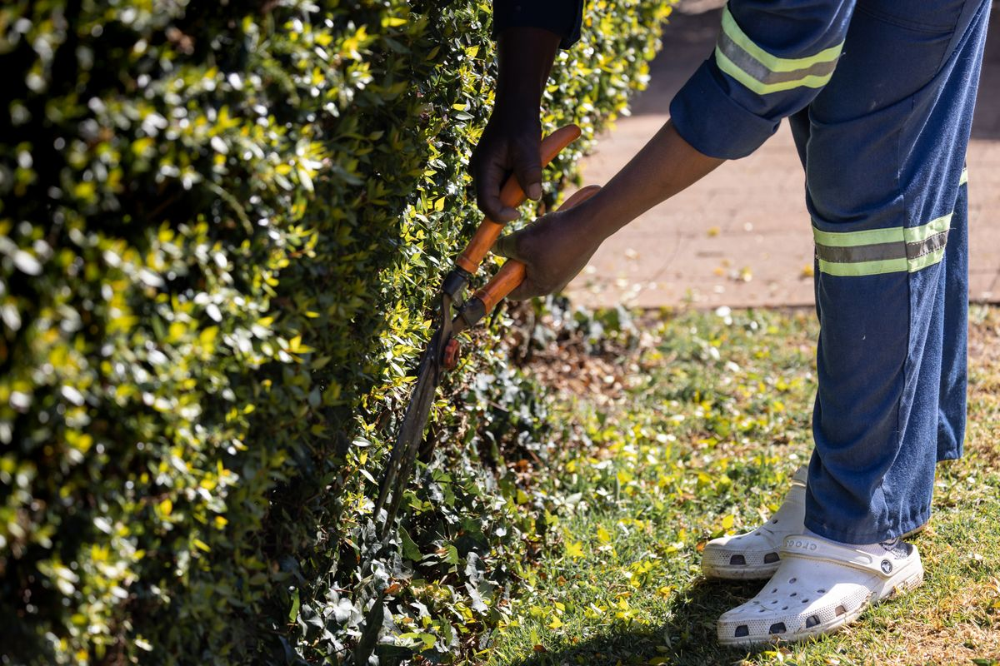

Manutenção mensal
Ronda programada: capina, corte de grama, limpeza de canteiros, adubação leve e verificação de irrigação.
Verde Costa Jardins · Jurerê
Manutenção e paisagismo residencial na Grande Florianópolis — poda, grama, adubação e projetos que respeitam o clima litorâneo.
Serviços
Do corte semanal da grama ao projeto de paisagismo — execução com EPI, descarte de resíduos e cuidado com irrigação e solo.
Ronda programada: capina, corte de grama, limpeza de canteiros, adubação leve e verificação de irrigação.
Poda de formação, limpeza de galhos secos, cercas vivas e arbustos — com ferramentas afiadas e altura segura.
Projeto com espécies adaptadas ao litoral, pedras, iluminação de jardim e integração com área de lazer.
Nivelamento, replantio de grama, correção de manchas e bordas alinhadas para acabamento impecável.
Contratos recorrentes para áreas comuns, entradas e jardins de casas — com checklist e relatório fotográfico.
Orçamento no local em Jurerê, Cacupé, Daniela e entorno — ideal antes de reforma ou temporada de verão.
Galeria
Clique para ampliar. Registro ilustrativo do padrão Verde Costa em jardins residenciais.
Por que a Verde Costa
Em Jurerê, vento salino e sol forte exigem espécies certas e manutenção na frequência certa. Nós planejamos e executamos — você só aproveita o jardim.
Palmeiras, gramas e folhagens que resistem à maresia — sem gambiarra de viveiro genérico.
Seg–Sáb, 07h–17h. Visita combinada por WhatsApp e equipe pontual, com materiais próprios.
Escopo fechado antes de começar, fotos do antes/depois e descarte correto de galhos e resíduos verdes.

Contato
Atendemos Jurerê, Daniela, Cacupé, Ingleses e toda a Grande Florianópolis — com base em Jurerê.
(48) 99971-8820